[N-World Contents] [Book Contents] [Prev] [Next] [Index]
Animating Attributes
In this chapter you'll learn how to animate the attributes used to render an object in N·World.
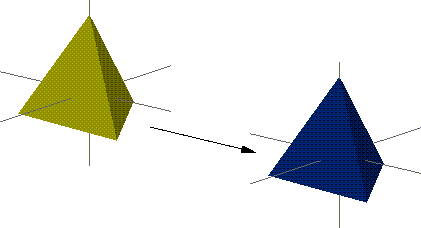
In this Chapter
You'll learn how to:
In order to render an object you need to specify three things:
- The domain in which the object will be rendered
- N·World can output objects to different targets (e.g., different game platforms, on the SGI using the built in GL renderer, or to a photorealistic image using N-Render). All targets, however, don't share the same attributes, so they're divided into target specific domains. Each domain has certain attributes specific to that domain (e.g., attributes for an object being sent to the Sega Saturn are different than those being ray-traced with N-Render).
- The material to be used when rendering the object
- A material gives the object its basic appearance characteristics, including color, opacity, texture maps, and so forth.
- The lights to be used when rendering the object
- A light also has attributes, such as type, color, shadow characteristics and so forth.
Both material and light attributes can be animated over time; this chapter describes animating a material.
Animating Material Attributes
There are four steps in animating a material attribute:
1. Create the object to use the material (using N-Geometry).
2. Create the material (using the Attributes Editor).
3. Assign the material to an object (using the Browser or in N-Geometry).
4. Select the attribute(s) of that material that you want to change and animate it (using N-Dynamics).
Creating the Object
The object can be any polyhedra loaded into N-Geometry. For this example, use a simple tetrahedron. In N-Geometry:
1. (CLICK-L) on GeoMenus>New Object>Tetrahedron.
- A tetrahedron appears in the N-Geometry window.
Creating a Material
The next step in animating a material attribute is to decide what kind of change you want to animate. Let's suppose that you want to change an object's diffuse color from yellow to dark blue, then back to yellow again over the course of a script.
In the Attributes Editor:
1. (CLICK-L) on the Materials button at the top of the screen.
2. (CLICK-L) on the New button to create a new material.
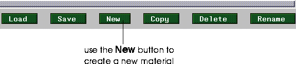
Figure 5.1 Create a new material
- Enter a name for the new material in the dialog box that appears.
3. (CLICK-L) on the GL Shade button to select that domain.
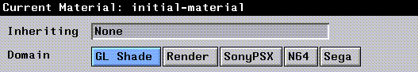
Figure 5.2 Select a domain
4. (CLICK-L) on the Shader box under the Material Parameters section of the Materials editor.
- The basic parameters for the material are selected in this section of the editor.
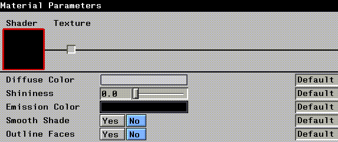
Figure 5.3 Selecting an attribute to animate
5. (CLICK-L) on the color box next to Diffuse Color.
- Select a bright yellow from the palette that appears.
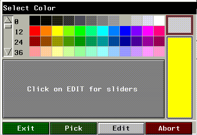
Figure 5.4 Selecting an initial color for the material
6. (CLICK-L) on the Rename button and give the material a descriptive name:
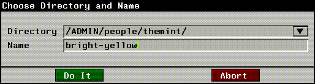
Figure 5.5 Naming the material
Assigning a Material to an Object
Now that you've defined a material set, you need to apply it to an object. There are two ways to assign a material to an object:
To assign a material through the Browser:
7. (SHIFT-L) on the object to which you want to assign a material.
- The Browser opens, showing you any objects loaded in N-Geometry:
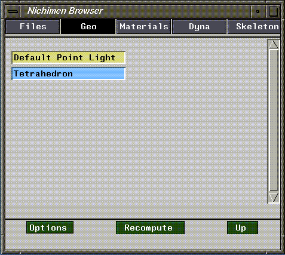
Figure 5.6 N-Geometry objects viewed through the Browser
8. (CLICK-R) on Tetrahedron.
- The following menu appears:
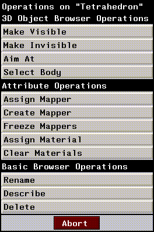
Figure 5.7 Browser selectable operations
9. (CLICK-L) on Assign Material.
- A list of currently loaded materials is displayed:
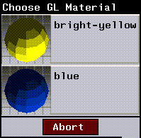
Figure 5.8 Selecting a material
10. (CLICK-L) on the icon for the material that you want to use.
- After applying the material, you can (CLICK-L) on the black triangle next to the object to see its new structure:
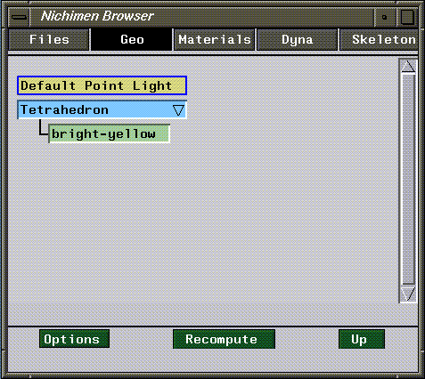
Figure 5.9 The updated structure is now shown in the browser
- The hierarchical structure in the Browser is described in more detail in Getting Started.
- You've now assigned a material to the object.
Assigning Materials in N-Geometry
You can assign a material to an object without using the Browser if you don't need to see your object hierarchy:
11. (SHIFT-L) on the object to which you want to assign a material.
12. (CLICK-L) on Material.
- A list of currently loaded materials is displayed:
Figure 5.10 Selecting a material
13. (CLICK-L) on the material you want to assign to the object.
Animating Material Attributes
Now that you've assigned the material to the object, you can animate changes in the attributes that make up the material.
14. Create a new script with two channels.
15. (CLICK-M) on the first channel, then (CLICK-L) on the Operation text edit box.
16. (CLICK-L) on the green Other>Attributes operation.
- Select Animate Attributes from the dialog box:
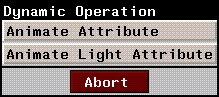
Figure 5.11 Animate attributes is used to animate materials
- The properties for this operation look like this:
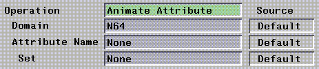
Figure 5.12 Changing Animate Attribute parameters
17. (CLICK-L) on the Domain text edit box.
- A menu of domains available in N·World appears:
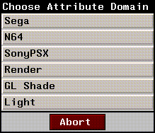
Figure 5.13 Selecting a domain
18. (CLICK-L) on GL Shade.
19. (CLICK-L) on the Attribute Name text edit box.
- A menu of attributes that can be animated for the selected domain is displayed:
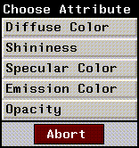
Figure 5.14 Selecting an attribute to animate
- This menu varies with the domain selected. For example, if you choose the Render domain, you'll have a substantially larger number of attributes that can be animated.
- However, for this tutorial, we'll use GL Shade since our changes can be viewed interactively on the SGI.
20. (CLICK-L) on Diffuse Color.
21. (CLICK-L) on Set and choose the material you created in the previous section.
- Your operation parameters should look like this:
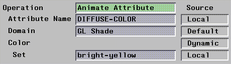
Figure 5.15 Operation parameters
- (CLICK-L) on Do It when you're done.
22. (CLICK-L) on the Animate DIFFUSE-COLOR channel, then (CLICK-M) on the cue at the end of the curve.
23. (CLICK-L) on a dark blue from the palette.
- This inserts a color value into the cue at the end of the channel. (You can insert any number of cues into this channel, depending on how many target colors you want hit over the course of the animation.)
24. In N-Geometry, make sure the object is shaded.
- (CLICK-L) on objects in the element sensitivity menu, then (SHIFT-L) on the tetrahedron and (CLICK-L) on Shading. An object must be shaded for GL Shade attributes to be visible.
25. (CLICK-M) on the Make Visible channel and select the Tetrahedron object.
26. Animate the script.
- The color of the object changes over the course of the script from yellow to blue.
- Note. If you playback an animation with a shaded object, the object appears in solid black. If you want to create a clip from an animation that contains a shaded object, you need to write out a movie file, which is described later in this chapter.
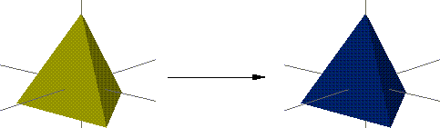
Figure 5.16 The object's diffuse color animates over time
Saving Color Animations
The preview feature of N-Dynamics writes out only 1-bit previews, since this feature is typically used for testing the motion aspects of an animation.
Whenever you want to write out an animation that includes shaded models, you need to write out a movie file. You can create a movie file from images in the N-Geometry window, the N-Paint canvas, or the N-Render output window. A movie file can be played back with the movieplayer utility from SGI.
To create a movie file:
1. Add another channel to the script.
2. (CLICK-M) on the channel.
3. (CLICK-L) on Operation>Dynamics>Image Operations>Record Movie Image.
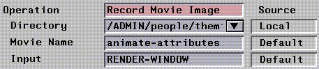
Figure 5.17 Parameters for creating a movie file
4. (CLICK-L) on the Input field to display a pop-up of the windows from which a movie can be generated:
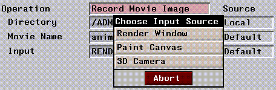
Figure 5.18 Selecting the source window for the movie file
5. (CLICK-L) on 3D Camera to record the changes displayed in the N-Geometry window.
6. (CLICK-L) on the Animate button in the N-Dynamics window.
Playing Back the Animation
To play back the animation:
7. Open a UNIX shell.
8. Change to the directory into which you wrote the movie clip.
- Movies have the extension .clip. You should see a file that looks like this in the directory you specified above:
script-name.clip
9. Enter the following command at the UNIX prompt:
movieplayer script-name.clip
The MoviePlayer control panel and playback windows appear, as shown in Figure 5.19.
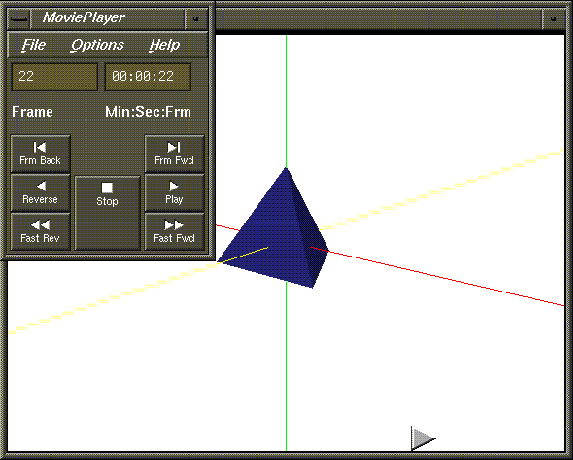
Figure 5.19 SGI's MoviePlayer utility
10. (CLICK-L) on the Play button to play back the animation.
- You can also (DRAG-L) on the triangle at the bottom of the playback window to wipe through the animation.
Congratulations!
You've now learned to animate both material attributes and light attributes in N-Dynamics.
[N-World Contents] [Book Contents] [Prev] [Next] [Index]
 Another fine product from Nichimen documentation!
Another fine product from Nichimen documentation!
Copyright © 1996, Nichimen Graphics Corporation. All rights
reserved.